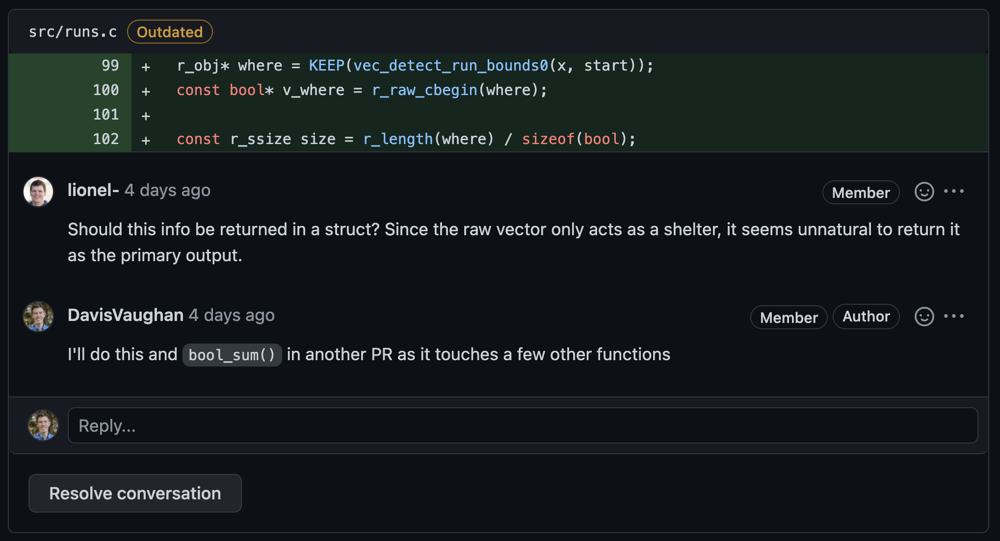

9 Handling reviewer comments
When you’ve sent a PR out for review, it’s likely that your reviewer will respond with several comments on your PR. Here are some useful things to know about handling reviewer comments.
9.1 Don’t take it personally
The goal of review is to maintain the quality of our packages. When a reviewer provides a critique of your code, think of it as their attempt to help you, the codebase, and Posit, rather than as a personal attack on you or your abilities. Most of the time, the reviewer is trying to help you grow as a developer.
Sometimes reviewers feel frustrated and they express that frustration in their comments. This isn’t a good practice for reviewers, but as a developer you should be prepared for this. Ask yourself, “What is the constructive thing that the reviewer is trying to communicate to me?” and then operate as though that’s what they actually said.
Never respond in anger to code review comments. That is a serious breach of professional etiquette that will live forever in the code review tool. If you are too angry or annoyed to respond kindly, then walk away from your computer for a while, or work on something else until you feel calm enough to reply politely.
In general, if a reviewer isn’t providing feedback in a way that’s constructive and polite, explain this to them in person. If you can’t talk to them in person or on a video call, then send them a private message. Explain to them in a kind way what you don’t like and what you’d like them to do differently. If they also respond in a non-constructive way to this private discussion, or it doesn’t have the intended effect, then escalate internally as appropriate.
9.2 Fix the code
If a reviewer says that they don’t understand something in your code, your first response should be to clarify the code itself. If the code can’t be clarified, add a code comment that explains why the code is there. If a comment seems pointless, only then should your only response be an explanation in the code review tool.
If a reviewer didn’t understand some piece of your code, it’s likely other future readers of the code won’t understand either. Writing a response in the code review tool doesn’t help future code readers, but clarifying your code or adding code comments does help them.
9.3 Think collaboratively
Writing a PR can take a lot of work. It’s often really satisfying to finally send one out for review, feel like it’s done, and be pretty sure that no further work is needed. It can be frustrating to receive comments asking for changes, especially if you don’t agree with them.
At times like this, take a moment to step back and consider if the reviewer is providing valuable feedback that will improve the package. Your first question to yourself should always be, “Do I understand what the reviewer is asking for?”
If you can’t answer that question, ask the reviewer for clarification.
If you understand the comments but disagree with them, it’s important to think collaboratively, not combatively or defensively:
Bad: “No, I’m not going to do that.”
Good: “I went with X because of [these pros/cons] with [these tradeoffs]. My understanding is that using Y would be worse because of [these reasons]. Can you help me understand if there is something that I am missing?”
Remember, courtesy and respect should always be a first priority. If you disagree with the reviewer, find ways to collaborate: ask for clarifications, discuss pros/cons, and provide explanations of why your method of doing things is better for the codebase and for users.
Sometimes, you might know something about the users, codebase, or PR that the reviewer doesn’t know. Fix the code where appropriate, and engage your reviewer in discussion, including giving them more context. Usually you can come to some consensus between yourself and the reviewer based on technical facts.
9.4 Who “resolves” GitHub comments?
On GitHub, there is button for Resolve conversation that appears under a comment thread:

This button will collapse the conversation, essentially marking the comment as “completed.” Both the author and reviewer see this button, so who’s job is it to resolve? At Posit, we typically expect the PR author to use the resolve button. One typical workflow is to add a thumbs-up emoji or a comment saying that you have handled their comment, and to then resolve the conversation. If you have a question about their comment that requires further input, then add a comment of your own and leave the thread open. Closing resolved threads can reduce the overall noise in the PR, especially if it goes through multiple rounds of review.
9.5 Resolving conflicts
If you are having difficulty coming to an agreement with your reviewer, try the advice in the reviewer section on conflicts.